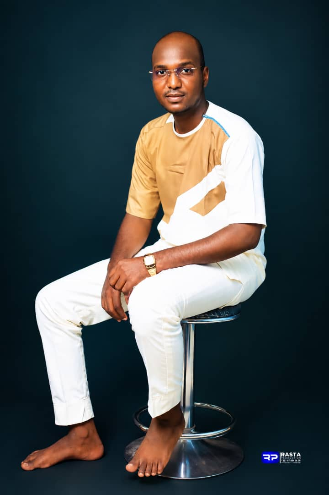
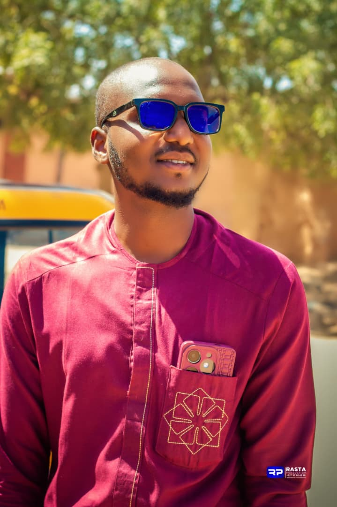

Studio audio & musique
Construis un son propre et cohérent, de la première idée au fichier prêt à partager.
- Création de beats et instrumentales
- Enregistrement de voix
- Mixage & mastering
- Export et préparation du morceau
Bienvenue chez Dj Nass Audiovisuel, votre partenaire créatif à Zinder pour produire votre musique, donner vie à vos vidéos et valoriser vos projets.

Artiste, entrepreneur, créateur de contenu ou organisateur d’événement : nous t’accompagnons avec des solutions audio et audiovisuelles adaptées à ton besoin.
Construis un son propre et cohérent, de la première idée au fichier prêt à partager.
Raconte ton histoire avec des images pensées pour ton morceau, ta marque ou ton événement.
Des visuels soignés pour présenter ton image avec professionnalisme.
Une solution sonore organisée pour tes prises de parole, animations ou événements.
Fais connaître ton activité grâce à des supports audiovisuels attractifs.
Progresse dans la création musicale et découvre les bases d’un workflow de studio.

Chez Dj Nass Audiovisuel, chaque projet commence par une discussion : comprendre ton objectif, choisir la bonne approche et préparer un résultat adapté à son utilisation.
Que tu prépares un single, un clip, une publicité ou une prestation sonore, nous mettons la création et la préparation technique au cœur du travail.
Un déroulement structuré pour avancer sereinement de la première discussion au livrable final.
Tu présentes ton idée, ton style, ton délai et le résultat attendu.
Nous définissons les étapes, le format et les détails du projet.
Place à la création, à la prise de son ou au tournage.
Nous finalisons le travail et préparons les fichiers convenus.
Un aperçu de l’univers de production audio, de tournage et de création visuelle.
Portraits authentiques de Dj Nass. Les images illustratives peuvent être remplacées par des réalisations audio et vidéo du studio au fil du temps.
Décris-nous ton idée sur WhatsApp pour discuter des besoins et obtenir une proposition adaptée.
Pour un devis, une réservation ou une question, contacte directement Dj Nass Audiovisuel.
Choisis une option pour commencer la discussion. Le bouton ouvre WhatsApp avec un message prérempli que tu peux modifier.
Les tarifs et la disponibilité sont confirmés directement selon les besoins de chaque projet.